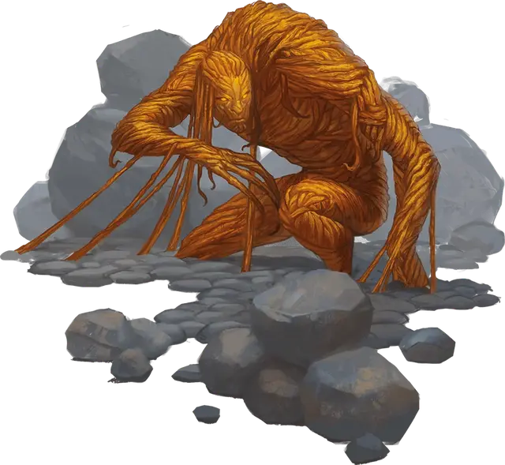

Астральная зараза
Astral Blight
Среднее Растение, без мировоззрения

Класс Доспеха 12 (природный доспех)
Хиты 26 (4к8 + 8)
Скорость 10 футов
| мод | спас | ||
|---|---|---|---|
| СИЛ | 16 | +3 | +3 |
| ЛОВ | 8 | −1 | −1 |
| ТЕЛ | 14 | +2 | +2 |
| мод | спас | ||
|---|---|---|---|
| ИНТ | 6 | −2 | −2 |
| МДР | 10 | +0 | +0 |
| ХАР | 3 | −4 | −4 |
Сопротивление урону излучение, холод
Чувства слепое зрение 60 футов (слеп за его пределами), пассивное Восприятие 10
Опасность 1 (200 опыта)
Бонус мастерства +2
Особенности
Свечение. Пока у заразы есть хотя бы 1 хит, она испускает тусклый свет в пределах 10 футов.
Необычная природа. Зараза не нуждается в воздухе и сне.
Действия
Мультиатака. Зараза совершает две атаки Вытягивающей тепло лозой.
Вытягивающая тепло лоза. . Рукопашная атака оружием: +5 к попаданию, досягаемость 10 фт., одна цель. Попадание: 6 (1к6 + 3) урона излучением, если цель — существо Большого или меньше размера, она становится схваченной (Сл высвобождения 13). Пока цель схвачена, она получает 3 (1к6) урона холодом в начале каждого своего хода. У заразы две лозы, каждая из которых может схватить одно существо